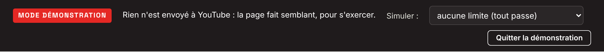
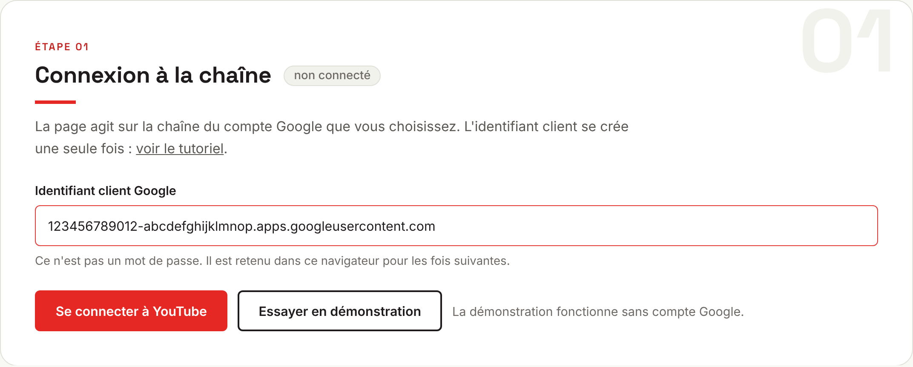
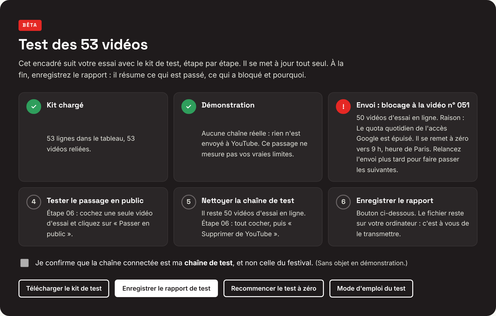
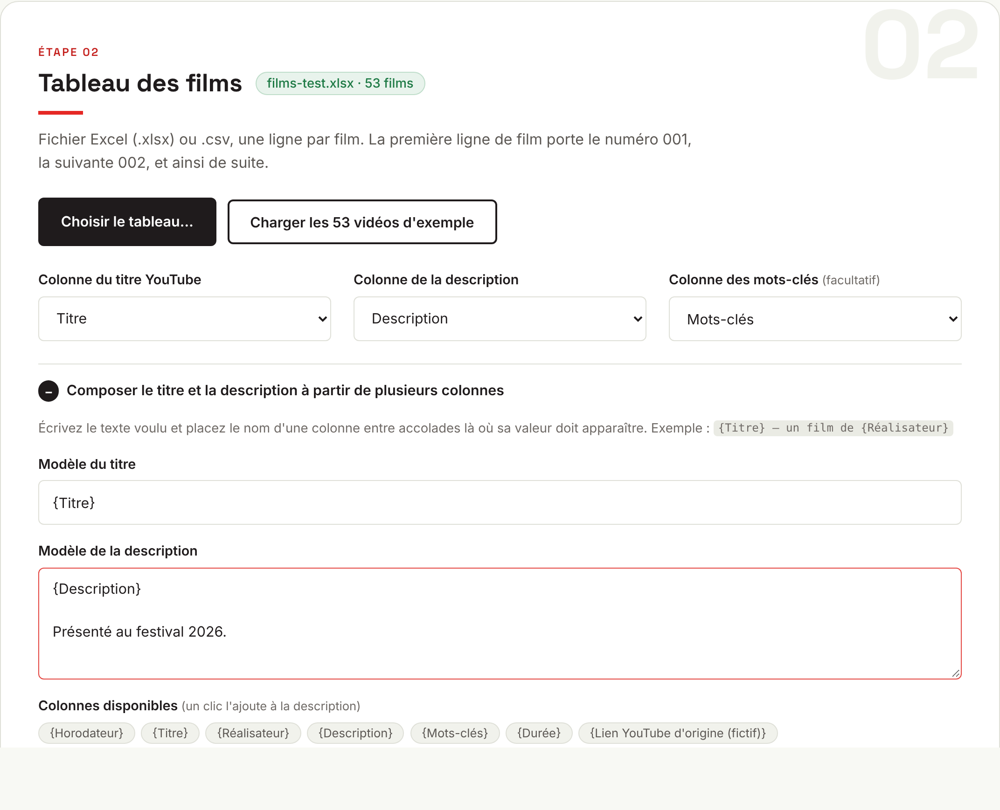
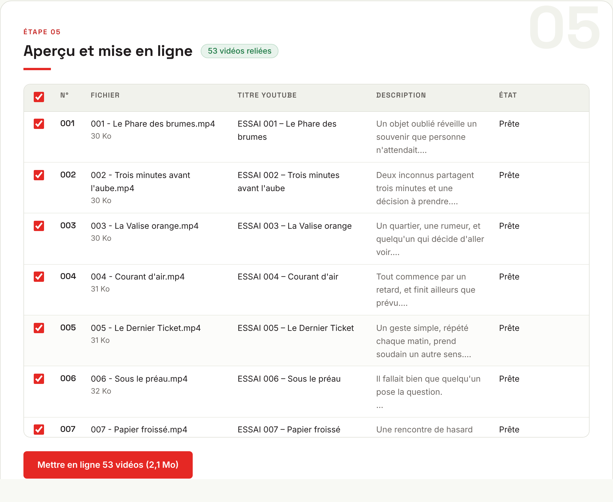
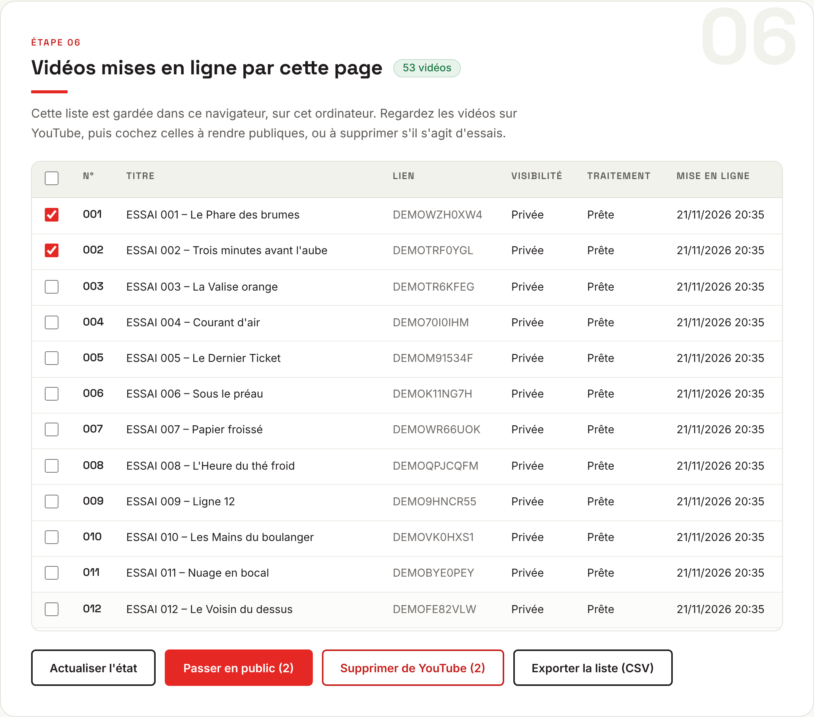
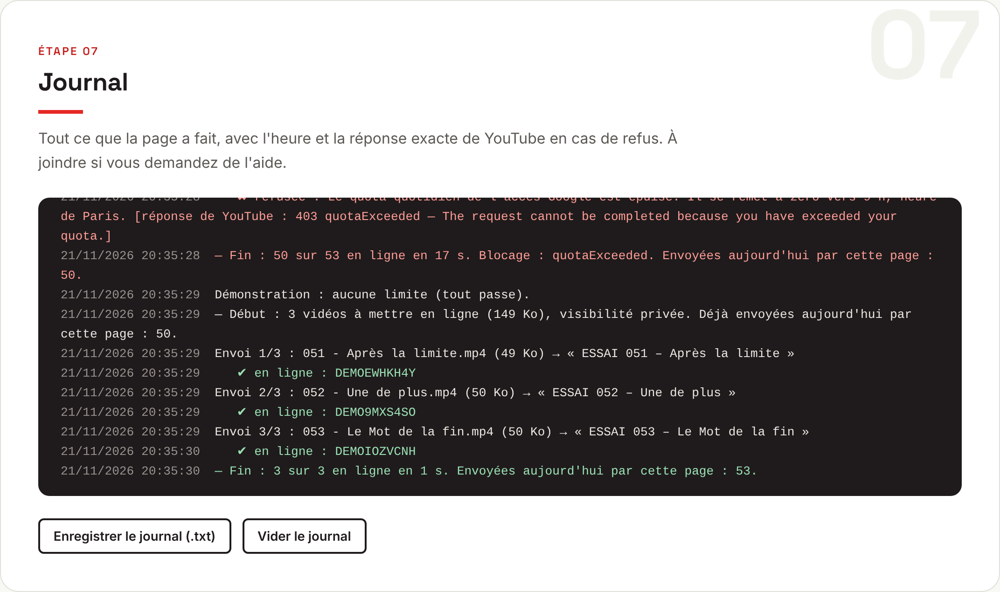

De l'essai à blanc aux vrais films.
Ce tutoriel suit l'ordre dans lequel faire les choses : s'exercer sans risque, créer l'accès Google, tester avec 53 vidéos factices pour connaître vos limites, puis mettre en ligne les films du festival.
Vue d'ensemble
L'outil est une simple page web. Vous lui donnez deux choses qui sont sur votre ordinateur : le tableau des films (Excel) et le dossier des vidéos. Il relie chaque vidéo à sa ligne du tableau, vous montre le résultat, puis envoie les vidéos sur votre chaîne YouTube avec le bon titre et la bonne description.
- Vos fichiers ne passent par aucun serveur intermédiaire. Ils vont directement de votre navigateur à YouTube.
- Les vidéos arrivent en privé. Vous les regardez, puis vous les rendez publiques d'un clic.
- Rien n'est envoyé deux fois. Après une coupure ou un blocage, l'envoi reprend où il s'était arrêté.
Ce qu'il vous faut
Un ordinateur avec Chrome ou Edge, le compte Google de la chaîne, et un « identifiant client » Google à créer une seule fois (chapitre 03). Pour simplement découvrir l'outil, rien de tout cela n'est nécessaire : passez au chapitre 02.
S'exercer en démonstration
Le mode démonstration remplace YouTube par un faux, qui vit dans la page. Rien ne sort de votre ordinateur et aucun compte n'est nécessaire. C'est le bon moyen de comprendre l'outil en deux minutes.
- Ouvrez l'outil en démonstration, ou cliquez sur Essayer en démonstration à l'étape 01 de l'outil. Un bandeau noir apparaît en haut de la page.
- À l'étape 02, cliquez sur Charger les 53 vidéos d'exemple. Le tableau et 53 fausses vidéos se chargent d'un coup.
- Dans le bandeau noir, choisissez ce que vous voulez voir : aucune limite, quota épuisé après 50 vidéos, limite de la chaîne, ou vidéos bloquées en privé.
- Cliquez sur Mettre en ligne et observez le bilan.

La démonstration ne mesure rien. Les limites qu'elle affiche sont celles que vous choisissez dans le bandeau. Pour connaître vos vraies limites, il faut le test réel des chapitres 05 à 07.
Créer l'accès Google
Aucune page n'a le droit d'agir sur une chaîne YouTube sans un « identifiant client OAuth », créé gratuitement dans la console Google Cloud. C'est à faire une seule fois et cela prend une vingtaine de minutes.
Un identifiant client, pas une clé API
Google propose aussi des « clés API », qui commencent par AIza. Elles servent à lire des informations publiques et ne permettent pas d'envoyer une vidéo. Ce qu'il vous faut se termine par .apps.googleusercontent.com. L'outil refuse une clé API et vous l'explique.
Google renomme régulièrement les menus de sa console. Si un intitulé ci-dessous a changé, cherchez le plus proche.
- Allez sur
console.cloud.google.comavec le compte Google de la chaîne, et créez un projet (par exemple « Festival »). - Menu API et services, puis Bibliothèque : cherchez YouTube Data API v3 et cliquez sur Activer.
- Menu Écran de consentement OAuth (ou « Google Auth Platform ») :
- type d'utilisateurs : Externe ;
- nom de l'application et adresses e-mail : les vôtres ;
- état de publication : laissez sur Test ;
- dans Utilisateurs tests, ajoutez l'adresse de chaque compte Google qui utilisera l'outil (celui de la chaîne de test et celui de la chaîne du festival).
- Menu Identifiants (ou « Clients »), puis Créer des identifiants et ID client OAuth :
- type d'application : Application Web ;
- dans Origines JavaScript autorisées, ajoutez l'adresse du site, sans rien après le nom de domaine et sans barre oblique finale. Pour cette page :
https://viktor-guignard.github.io
- Validez, puis copiez l'ID client. Vous n'avez pas besoin du « code secret » affiché à côté.
- Dans l'outil, collez l'ID client à l'étape 01 et cliquez sur Se connecter à YouTube.

Au moment de la connexion
- Google affiche « Google n'a pas validé cette application ». C'est normal pour un accès en mode Test : cliquez sur Paramètres avancés, puis sur Accéder à…
- Acceptez les deux autorisations demandées (gérer vos vidéos YouTube). Sans elles, l'envoi sera refusé.
- Si le compte gère plusieurs chaînes, Google vous demande laquelle utiliser : choisissez bien la chaîne voulue. Son nom s'affiche ensuite à l'étape 01.
Préparer une chaîne de test
Le test envoie 53 vidéos factices. Faites-le sur une chaîne à part, pour ne rien risquer sur celle du festival.
- Sur YouTube, connecté à votre compte, ouvrez le menu de votre photo de profil, puis Changer de compte et Afficher toutes les chaînes. Cliquez sur Créer une chaîne et nommez-la, par exemple « Essais festival ».
- Vérifiez que l'adresse du compte Google de cette chaîne figure bien dans les Utilisateurs tests du chapitre 03.
- Dans l'outil, cliquez sur Se connecter à YouTube et choisissez cette chaîne de test. Vérifiez son nom à l'étape 01 avant d'aller plus loin.
Ce que le test sur une chaîne à part mesure, et ce qu'il ne mesure pas
Il mesure le quota de votre accès Google, qui est le même quelle que soit la chaîne, et il vérifie que tout l'outil fonctionne en réel.
Il ne mesure pas la limite quotidienne propre à la chaîne du festival : YouTube en fixe une par chaîne, selon son ancienneté, sans publier le chiffre. Une chaîne toute neuve a souvent une limite plus basse qu'une chaîne ancienne.
Le kit de test
53 vidéos factices et leur tableau
Un fichier zip de 1,1 Mo. Tout y est fictif : titres, réalisateurs, adresses et liens. Chaque vidéo dure 10 secondes et affiche son numéro.
films-test.xlsx: le tableau, 53 lignes. Les titres commencent par « ESSAI 001 », « ESSAI 002 »… pour être reconnaissables sur la chaîne.YOUTUBE: 53 sous-dossiers numérotés, avec une vidéo dans chacun, rangés exactement comme le fait le programme de téléchargement.
Pourquoi 53 et pas 50 ? Pour voir ce qui se passe juste après un éventuel seuil à 50 : si un blocage tombe à la 51e, vous le verrez, et vous verrez aussi comment les trois dernières passent ensuite.
Pourquoi les vidéos sont-elles toutes différentes ? YouTube refuse les doublons sur une même chaîne. Avec 53 vidéos identiques, les refus auraient faussé le test. Chaque vidéo a donc sa couleur et son numéro à l'écran.
Faire le test des 53 vidéos
- Décompressez le kit sur votre ordinateur.
- Ouvrez l'outil et connectez-vous à la chaîne de test.
- Étape 02 : cliquez sur Choisir le tableau… et prenez
films-test.xlsx. L'outil reconnaît seul les colonnes du titre, de la description et des mots-clés. - Étape 03 : cliquez sur Choisir un dossier… et prenez le dossier
YOUTUBEdu kit. Le navigateur demande de confirmer l'envoi de 53 fichiers à la page : acceptez. - Étape 04 : laissez la visibilité sur Privée.
- Encadré noir « Test des 53 vidéos », en haut de la page : cochez la case qui confirme que la chaîne connectée est votre chaîne de test. Tant qu'elle n'est pas cochée, l'outil refuse d'envoyer le kit : c'est une sécurité pour ne pas envoyer 53 vidéos factices sur la chaîne du festival.
- Étape 05 : vérifiez que l'aperçu annonce « 53 vidéos reliées », puis cliquez sur Mettre en ligne 53 vidéos.
- Laissez l'onglet ouvert jusqu'au bilan. Avec des vidéos aussi légères, comptez quelques minutes.



Pendant l'envoi
Au bout d'une heure environ, Google demande de se reconnecter : un bandeau apparaît en bas de la page, un clic suffit et l'envoi continue. Le bouton Arrêter après la vidéo en cours permet de s'interrompre proprement.
Lire le résultat
À la fin de l'envoi, un bilan s'affiche sous le bouton. Il donne le nombre de vidéos passées et, en cas de blocage, la vidéo concernée, la raison en clair et la réponse exacte de YouTube.

| Ce que dit le bilan | Ce que cela signifie | Ce que vous faites |
|---|---|---|
| 53 / 53, « Tout est passé » | Ni votre accès Google ni la chaîne de test n'ont de limite en dessous de 53 vidéos par jour. | Vous pourrez envoyer les films du festival en une journée, sous réserve de la limite propre à la chaîne du festival. |
| Environ 6 / 53, « quota épuisé » | Votre accès Google compte encore un envoi au prix fort : une poignée de vidéos par jour. | Étalez les envois sur plusieurs jours, ou demandez une hausse de quota à Google depuis la console. Prévoyez du temps. |
| 50 / 53 ou un autre nombre, « quota épuisé » | Le quota de l'accès Google s'arrête à ce nombre de vidéos par jour. | Relancez le lendemain après 9 h : les vidéos restantes partiront, sans doublon. |
| « limite quotidienne de la chaîne » | C'est YouTube qui plafonne cette chaîne, pas votre accès. Le chiffre dépend de la chaîne. | Réessayez 24 heures plus tard. Ce chiffre ne vaut que pour la chaîne de test. |
| Quelques échecs isolés, pas de blocage | Des vidéos ont été refusées une par une (titre, description, coupure). | Lisez la raison dans la colonne « État » ou dans le journal, corrigez, relancez. |
Le quota se remet à zéro chaque jour à minuit, heure de Californie, soit vers 9 h à Paris. Le compteur « envoyées aujourd'hui par cette page » suit ce découpage.
Second test indispensable : le passage en public
YouTube peut garder en privé les vidéos envoyées par un accès que Google n'a pas encore contrôlé. Les vidéos d'essai servent aussi à le vérifier :
- À l'étape 06, cochez une seule vidéo d'essai et cliquez sur Passer en public.
- Si elle devient « Publique », votre accès peut publier : tout va bien. Supprimez-la ensuite avec les autres vidéos d'essai (chapitre 08).
- Si l'outil répond « YouTube la garde en privé », votre accès est bridé. Il faudra demander à Google le contrôle de l'accès (« audit » de l'API YouTube), ce qui peut prendre plusieurs semaines, ou mettre les films en ligne par YouTube Studio et n'utiliser l'outil que pour préparer les textes.

Le rapport de test
Dans l'encadré noir en haut de l'outil, le bouton Enregistrer le rapport de test crée un fichier texte qui réunit tout : la version de l'outil, la chaîne utilisée, chaque envoi avec son résultat, la vidéo et la raison exacte d'un blocage, le résultat du passage en public, et le journal complet. Enregistrez-le une fois le test terminé, et de nouveau le lendemain si vous relancez un envoi après un blocage.
Le fichier reste sur votre ordinateur. C'est lui qu'il faut transmettre pour faire analyser le test.
Garder une trace
L'étape 07 de l'outil contient le journal : chaque envoi, avec l'heure et la réponse exacte de YouTube en cas de refus. Enregistrez-le en fichier texte à la fin du test : c'est la pièce à joindre si vous demandez de l'aide.

Nettoyer après le test
- À l'étape 06, cochez la case tout en haut de la liste pour sélectionner toutes les vidéos d'essai.
- Cliquez sur Supprimer de YouTube et confirmez. Les vidéos sont supprimées de la chaîne et retirées de la liste.
- Vérifiez dans YouTube Studio que la chaîne de test est vide.
La suppression est définitive et ne concerne que les vidéos cochées dans cette liste, c'est-à-dire celles que l'outil a lui-même mises en ligne depuis ce navigateur. Elle ne touche à aucune autre vidéo de la chaîne.
Chaque suppression consomme un peu de quota. Si le quota est épuisé, faites le nettoyage le lendemain.
Mettre en ligne les vrais films
Le déroulé est le même que pour le test, avec vos fichiers.
- Téléchargez les vidéos avec le programme de téléchargement SwissTransfer. Il crée un dossier
YOUTUBEavec un sous-dossier numéroté par film. - Connectez-vous à la chaîne du festival (bouton « Changer de compte » si vous étiez sur la chaîne de test). Vérifiez son nom à l'étape 01.
- Chargez le même tableau que celui utilisé pour le téléchargement. C'est ce qui garantit que le numéro 007 désigne le même film des deux côtés.
- Choisissez les colonnes du titre et de la description. Pour ajouter les crédits ou une mention commune, ouvrez le volet « Composer » et écrivez par exemple :
{Description}puis, sur une nouvelle ligne,Réalisation : {Réalisateur}. - Choisissez le dossier
YOUTUBE, puis relisez l'aperçu ligne par ligne : c'est le moment de repérer un titre trop long ou une vidéo sans ligne. - Envoyez d'abord 2 ou 3 vidéos en décochant les autres, regardez-les sur YouTube, puis envoyez le reste.
- Publiez à l'étape 06, une fois chaque vidéo vérifiée.
Les règles qui évitent les erreurs
Ne triez pas et ne supprimez pas de lignes dans le tableau une fois les téléchargements commencés : les numéros se décaleraient.
Utilisez toujours le même navigateur sur le même ordinateur. La liste des vidéos déjà en ligne y est gardée ; ailleurs, l'outil ne saurait pas ce qui a déjà été envoyé. Exportez la liste en CSV pour en garder une copie.
Laissez l'onglet ouvert pendant l'envoi et empêchez la mise en veille de l'ordinateur.
Ce que l'outil vérifie avant l'envoi
- titre vide, ou de plus de 100 caractères ;
- description de plus de 5 000 caractères ;
- caractères
<ou>, que YouTube refuse ; - vidéo sans ligne correspondante, ou fichier vide.
Une vidéo concernée est décochée et la raison est indiquée dans la colonne « État ».
Dépannage
| Ce que vous voyez | Cause probable | Solution |
|---|---|---|
| Google affiche « Erreur 400 : origin_mismatch » ou « redirect_uri_mismatch » | L'adresse du site n'est pas dans les origines autorisées. | Dans la console, ajoutez exactement l'adresse indiquée au chapitre 03, sans barre oblique finale. Attendez quelques minutes. |
| « Accès bloqué » ou « Erreur 403 : access_denied » | Le compte n'est pas dans les utilisateurs tests. | Ajoutez son adresse dans « Utilisateurs tests » de l'écran de consentement. |
| La fenêtre Google ne s'ouvre pas | Le navigateur bloque les fenêtres surgissantes. | Autorisez-les pour ce site (icône dans la barre d'adresse), puis recliquez. |
| « Le service de connexion Google n'est pas chargé » | Un bloqueur de publicités ou le réseau empêche le chargement. | Désactivez le bloqueur pour ce site et rechargez la page. |
| « Ce compte Google n'a pas de chaîne YouTube » | Le compte choisi n'a créé aucune chaîne. | Créez la chaîne sur YouTube, ou choisissez le bon compte. |
| « L'API YouTube Data API v3 n'est pas activée » | L'étape 2 du chapitre 03 a été sautée. | Activez l'API dans la bibliothèque de la console. |
| « L'autorisation accordée ne suffit pas » | Une case d'autorisation n'a pas été cochée à la connexion. | Cliquez sur « Changer de compte » et acceptez toutes les autorisations. |
| Une vidéo indique « Aucune ligne du tableau ne correspond » | Son nom ne commence pas par un numéro de ligne, ou le numéro dépasse le nombre de lignes. | Renommez le fichier « 007 - Titre », ou vérifiez que le bon tableau est chargé. |
| « Traitement : Refusée : doublon » après actualisation | YouTube a reconnu une vidéo déjà présente sur la chaîne. | Supprimez l'une des deux. Pour le test, utilisez bien les vidéos du kit, toutes différentes. |
| Après un changement d'ordinateur, tout apparaît « Prête » | La liste des vidéos en ligne est restée dans l'autre navigateur. | Reprenez sur l'ordinateur d'origine, ou décochez à la main les vidéos déjà en ligne. |
Pour toute autre question, enregistrez le journal (étape 07 de l'outil) : il contient la réponse exacte de YouTube.